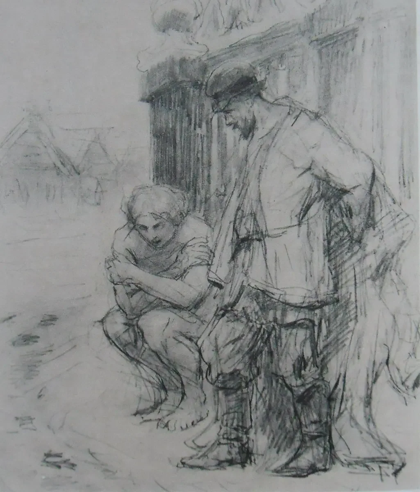

아직 펼치지 않은 카드겨울밤에 읽는 이야기 · 4사람은 무엇으로 사는가가난한 구두장이가 길에서 맨몸으로 떨던 낯선 젊은이를 데려왔어요. 그 젊은이는 누구였을까요?추운 날 길에서 옷도 없이 떨고 있는 사람을 만났대. 너라면 어떻게 할래?
어느 겨울날러시아 시골 · 구두장이 세몬의 오두막
사람은 무엇으로 사는가
어느 겨울날, 구두장이 세몬의 오두막에 커다란 신사가 비싼 가죽을 들고 와요. 1년을 신어도 망가지지 않을 장화를 지으라고요. 그 가죽으로 미하일이 무엇을 지었는지, 그날의 차례를 손으로 따라가 보세요.
부자 신사 아저씨가 1년 동안 안 망가지는 장화를 만들어 달라고 했대. 그런데 미하일 아저씨는 다른 걸 만들었어! 하나씩 눌러서 따라가 보자.
검수 전 시안이에요(기준서 2판). 장면은 톨스토이의 이야기를 모드 부부가 영어로 옮긴 글(1906)을 따랐고, 우리말은 이 안내서가 옮겼어요. 실내화 단계 그림은 이 안내서가 그렸어요. 상상은 ‘눈 감고 상상해 보기’에만 썼어요.
시안 확인용카드 단계 미리 보기
1
1년을 버틸 장화
미하일의 솜씨가 소문나자, 세몬의 장화가 가장 꼼꼼하고 튼튼하다며 온 고장 사람들이 찾아왔어요. 그렇게 한 해가 지난 어느 겨울날, 방울을 단 세 필 말 마차가 오두막 앞에 섰어요.
털외투를 입은 커다란 신사가 가죽 꾸러미를 내밀어요. 독일 가죽이고 20루블이나 했다고요. 1년을 신어도 모양이 망가지지 않고 실밥도 터지지 않을 장화를 지으라고 해요. 1년 안에 망가지면 감옥에 넣겠다고 으름장도 놓아요.
세몬이 미하일을 쳐다보자 미하일이 고개를 끄덕여요. 맡으라고요. 세몬이 종잇조각을 이어 붙여 신사의 다리 치수를 재는 동안, 미하일은 신사 뒤쪽 구석을 바라보다가 갑자기 웃어요. 얼굴이 환해졌어요. 미하일이 이 집에 온 뒤 두 번째로 웃은 웃음이에요.
신사는 나가다가 고개 숙이는 것을 잊고 문틀에 머리를 부딪혀요.
커다란 신사 아저씨가 와서 1년 동안 안 망가지는 장화를 만들라고 했대. 그런데 미하일 아저씨가 신사 뒤쪽을 보고 빙그레 웃었어!
물어보기미하일 아저씨는 신사 뒤에서 무엇을 보았을까?
2
그날 오후의 탁자
신사가 떠나자 세몬은 미하일에게 일을 맡겨요. 가죽은 비싸고 신사는 성미가 급하니 실수하면 안 된다고요. 미하일은 차분히 일을 시작해요. 아래 단추를 눌러 그날 미하일의 손을 따라가 보세요.
단추를 누를 때마다 그날 오후 미하일의 탁자가 한 단계씩 바뀌어요.
이 안내서가 그린 미하일의 탁자 · 「사람은 무엇으로 사는가」 7장(모드 부부 영역)의 차례를 바탕으로 · 가죽 조각의 모양은 이야기에 적힌 ‘둥글게’를 따라 짐작해 그렸어요
미하일의 탁자 위
- 20루블짜리 가죽
- 둥근 조각
- 한 가닥 실
- 부드러운 실내화
- 말아 든 자투리
탁자가 비었어요. 1년을 버틸 장화 대신, 그날 저녁에 필요한 실내화가 문을 나섰어요.
“사람에게는 자기에게 무엇이 필요한지 아는 힘이 주어지지 않았어요.”
미하일이 두 번째로 웃은 까닭을 들려주며 · 「사람은 무엇으로 사는가」 11장(모드 부부 영역) · 이 안내서가 옮김
이야기 끝에 미하일은 그날 웃은 까닭을 들려줘요. 신사의 어깨 뒤에 죽음의 천사가 서 있었대요. 그 사람은 1년을 준비하면서, 저녁이 오기 전에 죽으리라는 것을 몰랐다고요. 그리고 하나님이 배우라고 하신 두 번째 말씀, 사람에게 무엇이 주어지지 않았는지를 깨달았다고요.
장화를 만들랬는데, 미하일 아저씨는 부드러운 실내화를 만들었어! 그런데 바로 그때 누가 문을 탕탕 두드렸대.
물어보기문을 두드린 사람은 무슨 말을 전했을까?
눈 감고 상상해 보기
좁은 오두막에 가죽 냄새가 배어 있어요. 썰매 방울 소리가 멀어지고, 칼이 가죽을 스치는 소리만 사각사각 들려요. 점심때가 되도록 미하일의 바늘은 쉬지 않아요. 그때 문에 달린 쇠고리가 탕탕 울려요.
눈을 감아 봐. 사각사각 가죽 자르는 소리, 쓱쓱 바느질하는 소리. 그러다 탕탕! 누가 왔어.
나의 자리
세몬이 “나를 망쳤구나!” 하던 그때, 하인은 아직 문을 두드리기 전이었어요. 내가 그 오두막에 있었다면 미하일에게 무엇을 물었을까요?
장화 대신 실내화를 본 세몬 아저씨는 깜짝 놀랐어. 너라면 미하일 아저씨한테 뭐라고 물어봤을까?
마음에 닿는 한 줄을 고르거나 직접 써 보세요. 한 줄을 남기면 이 자리의 도장이 찍혀요. 이 기기에만 저장돼요.
더 깊이
궁금한 칸만 펼쳐 읽어도 괜찮아요.
알고 보면
세 가지 배움 이야기 속 하나님은 천사 미하일에게 세 가지를 배우라고 해요. 사람 안에 무엇이 있는지, 사람에게 무엇이 주어지지 않았는지, 사람은 무엇으로 사는지. 신사의 장화는 그 가운데 두 번째 물음의 답이 돼요.
세 번의 웃음 첫 웃음은 처음에 화를 내던 마트료나가 남편의 말에 마음을 풀고 저녁을 내줄 때, 두 번째는 신사가 장화를 맞출 때, 세 번째는 미하일이 이 집에서 여섯 해째 살던 해에 찾아온 한 여인 때문이에요. 여인은 자기가 낳지도 않았고 친척도 아닌 쌍둥이 두 여자아이를 데려다 키우며, 그 아이들의 봄 신발을 맞추러 왔어요. 한 아이는 왼쪽 다리를 절었어요.
요한일서의 말씀 톨스토이는 러시아어 원문 맨 앞에 요한일서의 구절 여럿을 적어 두었어요. 형제를 사랑하기에 죽음에서 생명으로 옮겨 간 줄 안다는 말씀(요한일서 3장 14절)으로 시작하고, 하나님은 사랑이시니 사랑 안에 사는 사람은 하나님 안에 산다는 말씀(요한일서 4장 16절)도 들어 있어요.
기록마다 다른 점
쓴 해 모드 부부가 엮은 영어 선집 『스물세 이야기』는 이 이야기를 1881년 작품으로 적어요. 몇몇 영어 자료는 1885년으로 적어요.
제목 영어 제목은 흔히 “What Men Live By”이지만, “What People Live By”로 옮긴 책도 있어요.
원문 읽기
확인한 날 · 2026년 11월 18일 · 바뀌기 쉬운 정보라 정기적으로 다시 확인해요
이 이야기는 러시아어 원문과 모드 부부의 영어 번역(1906) 모두 저작권이 끝나 누구나 읽을 수 있어요.
실내화 끝까지 금박
그날 미하일의 다섯 단계를 끝까지 따라가면 카드에 금박이 입혀져요.
다섯 단계를 끝까지 해 보기
아이와 함께 채색
아이와 함께 ‘영화처럼 보기’를 끝까지 보면 카드가 채색돼요.
아이와 함께 ‘영화처럼 보기’를 끝까지 보기
근거 보기 (8)
- 톨스토이 아카이브(마르크스주의자 인터넷 아카이브, 프로젝트 구텐베르크의 모드 부부 번역) 6장 — 솜씨 소문, 한 해, 방울 단 세 필 말 마차, 털외투, 독일 가죽 20루블, 1년 장화, 감옥 으름장, 고개 끄덕임, 종잇조각 치수, 구석을 보다 웃음, 문틀
- 같은 아카이브 7장 — 실수하면 안 된다, 펴서 반으로 접어 오림, 둥글게, 마트료나, 한 끝 실, 점심때까지, “나를 망쳤구나”, 쇠고리, 하인의 말(마차 안에서 숨을 거둠, 주검에 신길 실내화), 자투리를 말아 건넴
- 같은 아카이브 8장 — 여섯 해째, 두 여자아이와 왼쪽 다리, 봄 신발, 데려다 키움
- 같은 아카이브 11장 — 첫 웃음(마트료나의 마음), 두 번째 웃음(죽음의 천사, 1년을 준비하며 저녁을 모름, 두 번째 말씀, “It is not given to man to know his own needs.”)
- 기독교 고전 전자 도서관(CCEL): 『스물세 이야기』(L. and A. Maude 옮김) 4. What Men Live By (1881)
- 오픈 라이브러리: 『Twenty-three tales』 — 옥스퍼드 대학 출판부 월즈 클래식스 72번, 1906년 12월, 머리말 1906년 2월 1일
- 위키백과(영어): What Men Live By — 1885년으로 적음, “What People Live By”로도 옮김
- 위키문헌(러시아어): 「Чем люди живы」 — 맨 앞의 요한일서 구절(3장 14절 · 17절 · 18절 · 4장 7절 · 8절 · 12절 · 16절 …)
‘처음 만나는 기독교 문화’의 깊은 카드예요. 실제 인물의 사진은 쓰지 않았어요. 카드 단계와 남긴 글은 이 기기에만 저장돼요.